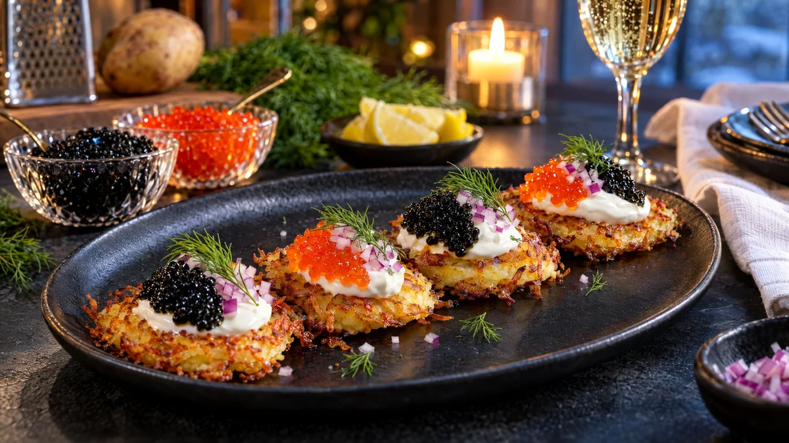

RESTFEST · RECEPTFörrätt · Mingelmat & tilltugg
Röstiblinier med crème fraiche och stenbitsrom
Råriven potatis, en burk stenbitsrom och en burk crème fraiche. Små krispiga potatisplättar toppas med en klick crème fraiche, glänsande svart och röd rom, finhackad rödlök och dill. Det ser ut som kaviar på en finkrog men kostar som en vardagsmiddag.
- Förberedelse
- 20 min
- Tillagning
- 20 min
- Portioner
- 4 som förrätt (ca 16 st)
- Nivå
- Medelsvårt
Det här behöver du
Tryck på + vid det du behöver köpa.
Röstiblinier
Topping
Gör så här
- Sätt ugnen på 100 grader, så att du kan hålla blinierna varma.
- Lägg rommen i en fin sil, en färg i taget. Skölj snabbt med kallt vatten och låt rinna av. Då färgar rommen inte crème fraichen.
- Finhacka rödlöken, plocka dillen i små kvistar och skär citronen i klyftor.
- Skala potatisen och riv den på rivjärnets grova sida. Lägg den rivna potatisen i en ren kökshandduk och vrid ur så mycket vätska som möjligt. Det är det viktigaste steget för krispiga blinier.
- Blanda potatisen med ägg, potatismjöl, salt och vitpeppar. Gör det direkt, eftersom riven potatis mörknar snabbt.
- Hetta upp ½ msk olja och ½ msk smör i en stekpanna på medelhög värme. Lägg i rågade matskedar av smeten och platta till dem till runda plättar, ca 5 cm breda och ½ cm tjocka. Forma kanterna med skeden så att de blir jämnt runda.
- Stek 3 minuter per sida, tills blinierna är gyllene och krispiga. Lägg dem på hushållspapper och sedan i ugnen. Ta nytt fett till varje omgång.
- Lägg upp blinierna och toppa var och en med en liten klick crème fraiche, ½ tsk rom, lite rödlök och en dillkvist.
Dekoration och servering
- Varva svart och röd rom på varannan blini, eller lägg båda färgerna sida vid sida på varje.
- Forma crème fraichen till små quenelles med två teskedar för ett mer restaurangmässigt intryck.
- Lägg 3–4 blinier per person på en mörk tallrik eller servera alla på ett stort fat som mingelmat.
- Ställ fram citronklyftor och strö lite rivet citronskal över precis före servering.
- Blinierna är godast nygräddade, men kan stekas en timme i förväg och värmas i ugnen på 200 grader i 5 minuter.
Mått och ugnstemperaturer
Måtten är svenska (dl, msk, tsk, krm). Ugnstemperaturerna gäller vanlig ugn med över- och undervärme; med varmluft, sänk med 20 grader.